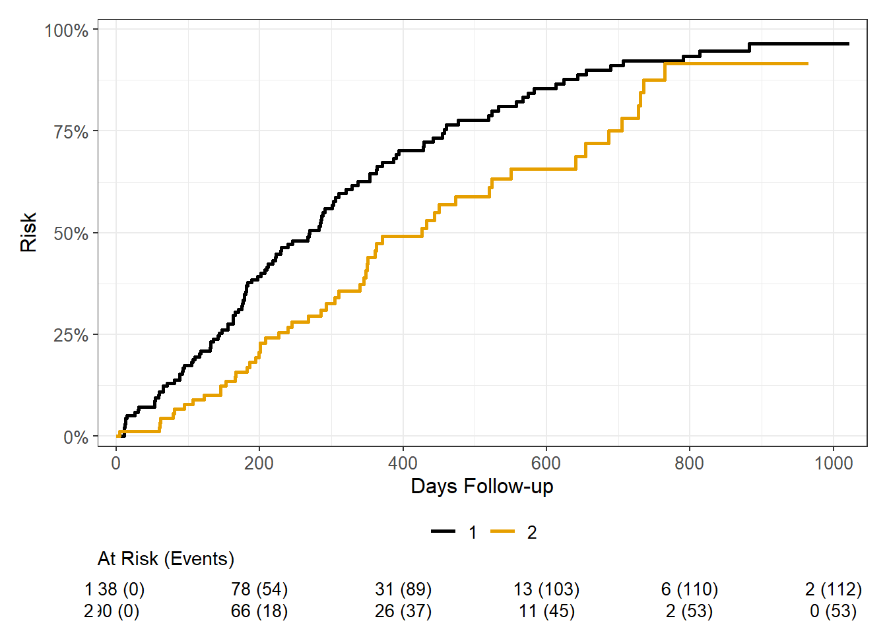

dta = survival::lung
dta <-
dta |>
mutate(
status = recode(status, `1` = 0, `2` = 1)
)Cumulative incidence modeling
Goodness of fit tests for parametric functions
Diagnostic issue
If pooled logistic regression is used to estimate the conditional probability of survival, and cumulative incidences between assignment groups, then assumptions have to be made about the parametric function of time. This is essentially a curve-fitting exercise, and lots of literature on how best to do that. In the diagnostics/validation section, I show how to visually compare a simple parametric regression to Kaplan-Meier curve. Here, I offer a tutorial here on how to objectively compare.
Practice data
The synthetic data is generated from simple distributions, for a more real-world scenario with noisier curves I use the lung data.

Our objective here is to model this curve with different parametric functions and see which performs best. We will model sex (1 and 2) as a surrogate for a treatment variable.
Measurement
Some might call this a ‘loss function’, but generically we need to define a measurable thing which can describe the performance of different models against the raw data. There are many options, I choose the root mean squared error, RMSE.
\[\text{RMSE} = \sqrt{\frac{1}{n}\sum_{i=1}^{n}\left(y_i - \hat{y}_i\right)^2} \]
Its a common metric to evaluate curve fitting, measuring the average difference between predicted and actual values. Larger errors are penalized more strongly with squared differences. The square root scales back to the original data.
Data setup
In order to evaluate the data we need to transform the time,event data into a discrete-time person-period format. Here we are going to summarize the cumulative incidence in the 1) raw data (separately for male/female), 2) aggregated data at monthly level, 3) Different functional parametric forms.
dta_dt = dta %>%
mutate(period = ceiling(time / 30)) %>% # 30-day increments
rowwise() %>%
do({
tibble(id = .$inst,
period = 1:.$period,
event= c(rep(0, .$period - 1), .$status),
gender = .$sex,
age = .$age)
}) %>%
ungroupCandidate models
A series of candidate models are evaluated, 1) logit, cloglog and probit, 2) saturated (different intercept for each time period), polynomial (2, and 3), splines (linear, cubic).
A function, est_cuminc is defined that will be used to efficiently cycle through each model specification.
est_cuminc = function(family, timefunc, dta=dta_dt) {
mod = glm(timefunc, family = family, data = dta)
dta$p_1 = predict(mod, type = 'response')
dta_summ = dta %>%
group_by(period) %>%
summarize(p_ev = mean(p_1), .groups = 'drop') %>%
mutate(p_s = cumprod(1-p_ev),
p_inc = 1 - p_s)
return(dta_summ)
}# candidate families
i_fams = list(`logit` = binomial(link = 'logit'),
`cloglog` = binomial(link = 'cloglog'),
`probit` = binomial(link = 'probit'))
i_form = list(`factor` = as.formula(event ~ factor(period)),
`quadratic` = as.formula(event ~ poly(period, 2)),
`cubic` = as.formula(event ~ poly(period, 3)),
`cubic spline` = as.formula(event ~ splines::bs(period, df=6, degree=3)),
`quad spline` = as.formula(event ~ splines::bs(period, df=6, degree=2)),
`linear spline` = as.formula(event ~ splines::bs(period, df=6, degree=1)))
# tibble of combinations of model choices
d_mods = crossing(family = i_fams, formula = i_form)
# loop through all
d_mods$cuminc = pmap(.l = list(d_mods$family, d_mods$formula), est_cuminc)
# KM comparator
km <- survfit(Surv(time, status) ~ 1, data = lung)
km_cuminc = tibble(
time = km$time,
period = ceiling(time / 30), # 30-day increments
p_s = km$surv,
p_e = 1 - p_s
) %>%
group_by(period) %>%
dplyr::filter(time == max(time)) %>%
ungroupModel performance
rmse = function(pred, truth) {
sqrt(mean((pred - truth)^2))
}
d_mods$dta_jn = map(d_mods$cuminc, ~inner_join(., km_cuminc, by = join_by(period == period)))
d_mods$rmse = map(d_mods$dta_jn, ~rmse(.$p_inc, .$p_e))rmse_results = tibble(family = names(d_mods$family),
time = names(d_mods$formula),
rmse = unlist(d_mods$rmse))
rmse_results %>%
arrange(rmse)# A tibble: 18 × 3
family time rmse
<chr> <chr> <dbl>
1 probit factor 0.00460
2 cloglog factor 0.00460
3 logit factor 0.00460
4 probit cubic spline 0.0104
5 logit cubic spline 0.0104
6 cloglog cubic spline 0.0104
7 probit quad spline 0.0110
8 logit quad spline 0.0110
9 cloglog quad spline 0.0110
10 cloglog linear spline 0.0113
11 logit linear spline 0.0113
12 probit linear spline 0.0113
13 probit cubic 0.0131
14 logit cubic 0.0132
15 cloglog cubic 0.0132
16 probit quadratic 0.0133
17 logit quadratic 0.0135
18 cloglog quadratic 0.0135